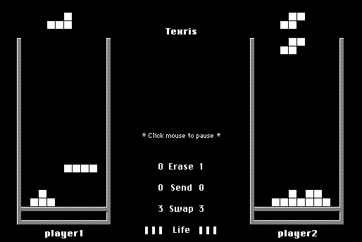

Download
Texris_1.21.zip (115K) Texris 1.21 repackaged into a zipped hfs disk image and checksum file. The disk image can be mounted with Mini vMac. (“Texris 1.21 B/W patch” has already been run to create “Texris 1.21 B/W”.)
Texris_1.21.hqx (94K) Texris 1.21 application in the original format.
copyright: Takahiro Sumiya
mod date: May 27, 1996
license: freeware
last known url
(gone)
A "Tetris-like game for 2 players". You need to apply the 'B/W patch' to use it on a Macintosh Plus. "Requires System 6.07 or later." (In testing with Mini vMac 3.3.3, I found problems in System 6.0.8, but it worked fine with 7.1.)

If you find these downloads useful, please consider helping the Gryphel Project, which hosts them.
Here are the md5 checksums for the downloads, signed with Gryphel Key 5:
--------- GRY SIGNED TEXT --------- 62b178a5ab284286f4c496d933bb1d30 Texris_1.21.zip eb97f95519dde32b3b315a370e07bd8d Texris_1.21.hqx ------- BEGIN GRY SIGNATURE ------- Gry/4Xa8CFcUzxdN/OG1bfotwnIh6PpmcjvJzhaoXpPLAAohpty4k+0DVtJVjvBz 4NlHq4LkO/zFMFT/0Z8THNYnRdMphzfSsWnCU8ND/3BHNtBpFtq4GIgGbDXGde32 lQ5iMDrwOY7mLo9OmvHICC/I+D/iWc8fGujgwcba/ePqQWXnVoRC9/YxmSOVlLzh -------- END GRY SIGNATURE --------